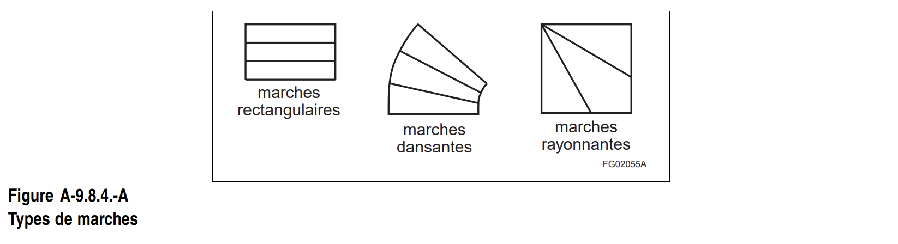
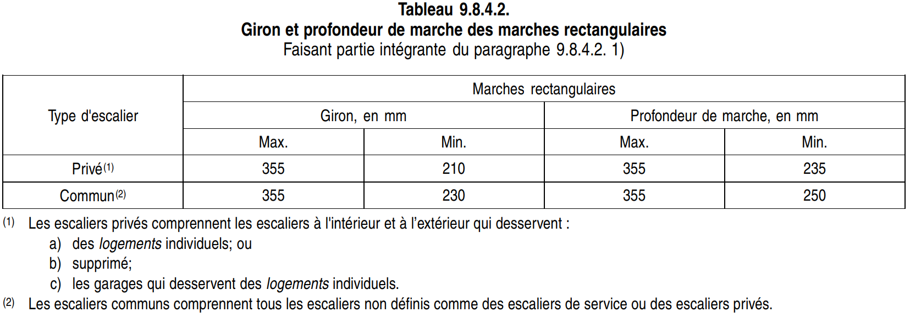
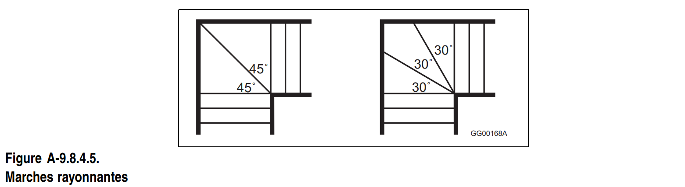
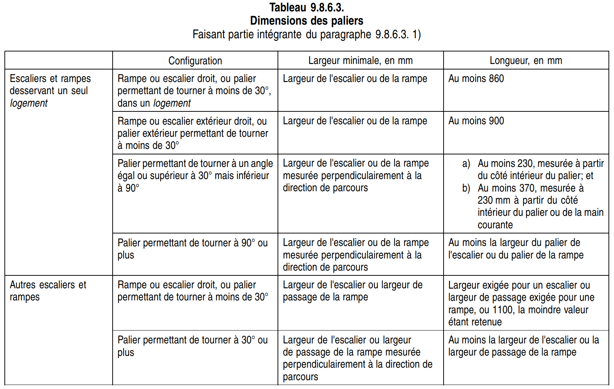
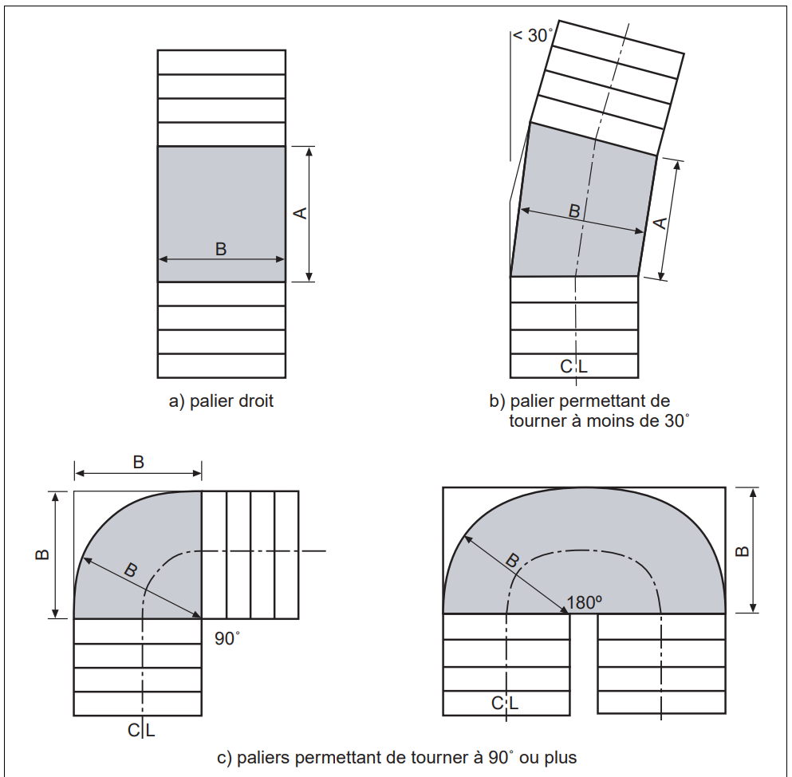
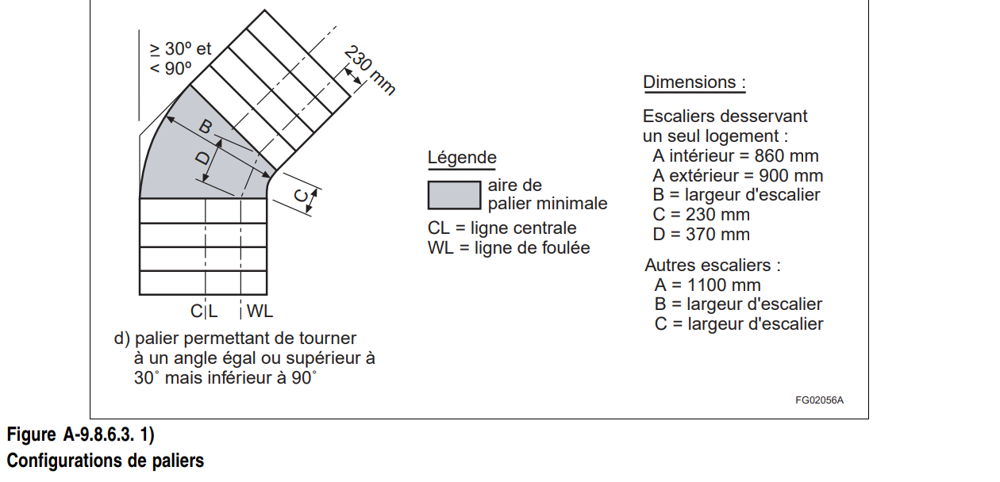

Escaliers
Activer le mode plein écran
Dimensions des escaliers, rampes, mains courantes et garde-corps
La Partie 9 n’échappe jamais à une révision du Code. Ce dernier précise où mesurer l’échappée, la contremarche, le giron et la hauteur des mains courantes des escaliers et des rampes.
La partie 9 uniformise à 870 mm la largeur minimum des rampes d’issues ou publiques. Dans les escaliers et rampes de plus de 2200 mm, on devra installer des mains courantes de manière à ce qu’aucune position sur l’escalier ou la rampe ne soit à plus de 825 mm d’une main courante.
Le Code exige également une main courante fixée au mur pour les escaliers et rampes munis de garde-corps.
/Attachments/first_img.png)
Les escaliers sont réglementés selon le Code de Construction (Section 9.8. Escaliers, rampes, mains courantes, et garde-corps) rédigé par la Régie du bâtiment du Québec.
Qu’il s’agisse d’un escalier intérieur ou d’un escalier extérieur les règles sont semblable. Toutefois pour un escalier extérieur et selon toute logique, un balcon au deuxième étage aura un garde-corps plus élevé, soit d’un minimum de 42 pouces. La main courante est indispensable s’il n’y a pas de garde-corps.
L’escalier est constitué de contremarches, de limons, soit le côté de la cage d’escalier, et de marches, dont la profondeur est appelée giron. La contremarche dans les normes doit avoir entre 5 po et 7 7/8 po de hauteur.
Le giron varie quant à lui entre 8 1/4 po et 14 po. La largeur de l’ensemble doit être d’un minimum de 34 pouces, et une hauteur de 6,6 pieds est fortement recommandée entre les marches et le plafond, distance appelée échappée.
La main courante (rampe) est obligatoire, que l’escalier soit complètement encastré ou qu’il soit accoté à un seul pan de mur. Le Code exige que cette rampe ne change de côté, malgré un coin ou un palier. Quelqu’un qui a des problèmes de vision ne doit pas chercher la suite de la main courante si on l’a changée de côté.
Un côté libre veut automatiquement dire la pose d’un garde-corps, soit une rampe avec barreaux, ayant une hauteur minimale de 36 po. On doit toujours pouvoir poser sa main sur un côté de l’escalier, surtout s’il n’est pas emmuré. Même les barreaux ont un espace requis, un maximum de 4 po, afin d’éviter que ne passent par le trou des objets ou les jambes des tout-petits.
Les garde-corps doivent empêcher les enfants de grimper. Les barreaux ne devraient pas contenir trop d’éléments horizontaux. Ces parties fréquentes dans les constructions en fer forgé peuvent aider bébé à s’agripper un peu partout.
Le Code prescrit aussi un maximum de trois marches dans un coin à 90 degrés, pour éviter que les surfaces aient moins de 30 degrés. C’est dangereux dans les coins si l’angle est trop aigu, spécifie le directeur technique. Le colimaçon, comprenant beaucoup de ces pointes, ne respectera pas la règle du 30 degré, mais les marches devront être plus larges afin de pouvoir déposer le pied.
Détail d’un escalier
/Attachments/139_detail_escalier.png)
Conception d’un escalier
/Attachments/141_conception_escalier.png)
Éléments constitutifs d’un escalier
/Attachments/142_elements_escalier.png)
Dimensions des escaliers
9.8.2.1. Largeur
1) Les escaliers d’issue exigés et les escaliers utilisés par le public doivent avoir une largeur d’au moins 900 mm.
2) Au moins un escalier entre deux niveaux successifs d’un logement et les escaliers extérieurs desservant un seul logement, sauf les escaliers d’issue exigés, doivent avoir une largeur d’au moins 860 mm.
9.8.2.2. Échappée
1) L’échappée doit être mesurée à la verticale au-dessus de la largeur de passage de l’escalier, à partir d’une tangente au nez des marches et des paliers jusqu’à l’élément le plus bas situé au-dessus (voir la note A-3.4.3.4.).
2) Sous réserve du paragraphe 3), l’échappée doit être d’au moins 2050 mm
3) L’échappée pour un escalier desservant un seul logement doit être d’au moins 1950 mm.
4) Supprimé.
9.8.3.2. Nombre minimal de contremarches
1) Les volées des escaliers intérieurs, sauf celles des escaliers d’un logement, doivent avoir au moins 3 contremarches.
Dimensions des marches
A-9.8.4. Dimensions des marches.
Le CNB distingue trois principaux types de marches d’escaliers et emploie les termes suivants pour les décrire : les marches rectangulaires dans les escaliers droits, les marches dansantes dans les escaliers tournants et les marches rayonnantes, qui sont un type particulier de marches dansantes décrites à l’Annexe 9.8.4.5.

9.8.4.4. Uniformité et tolérances

1) Sous réserve du paragraphe 2), la hauteur des contremarches doit être uniforme dans une même volée, sous réserve d’une tolérance maximale de :
a) 6 mm entre des marches ou des paliers successifs; et
b) 6 mm entre la contremarche la plus haute et la contremarche la plus basse d’une volée.
2) Sauf pour les escaliers d’issue exigés, là où les première et dernière contremarche d’un escalier donnent sur une aire piétonnière en pente comme un plancher de garage, une voie d’accès privée pour automobiles ou un trottoir, la hauteur de la contremarche sur toute la largeur de l’escalier ne doit pas varier de plus de 1 : 12.
3) Le giron et la profondeur de marche doivent être uniformes, sous réserve d’une tolérance maximale de :
a) 6 mm entre les marches successives; et
b) 6 mm entre le giron et la contremarche les plus profonds et le giron et la contremarche les moins profonds d’une volée.
4) Si des marches dansantes ou rayonnantes sont intégrées dans un escalier, toutes les marches dans une même volée doivent permettre de tourner dans la même direction.
5) L’inclinaison transversale des marches ne doit pas dépasser 1 : 100.
9.8.4.1. Dimensions des contremarches
1) Sauf pour les escaliers qui desservent des espaces utilisés uniquement comme locaux techniques ou vides techniques, la hauteur des contremarches, mesurée comme la distance verticale de nez à nez, doit être conforme au tableau 9.8.4.1.
9.8.4.2. Dimensions des marches rectangulaires
1) Sauf pour les escaliers qui desservent des espaces utilisés uniquement comme locaux techniques ou vides techniques, le giron, mesuré comme la distance verticale de nez à nez, et la profondeur de marche des marches rectangulaires doivent être conformes au tableau 9.8.4.2.
2) La profondeur d’une marche rectangulaire ne doit pas être inférieure à son giron ni supérieure à ce dernier augmenté de 25 mm.
9.8.4.3. Dimensions des marches dansantes
1) Les marches dansantes des escaliers d’issue exigés doivent être conformes à l’article 3.4.6.8.
2) Sous réserve de l’article 9.8.4.5., les marches dansantes dans les escaliers autres que les escaliers d’issue exigés doivent avoir un giron d’au moins 150 mm, le giron moyen étant d’au moins 200 mm.
3) La profondeur d’une marche dansante ne doit, en aucun point, être inférieure à son giron, ni supérieure à ce dernier augmenté de 25 mm.
9.8.4.5. Marches rayonnantes
(Voir l’annexe)
1) Les marches rayonnantes individuelles qui convergent vers un point central doivent permettre de tourner à un angle :
a) de 30 degrés, sans écart positif ou négatif; ou
b) de 45 degrés, sans écart positif ou négatif.
2) Chaque série de marches rayonnantes intégrée à un escalier ne doit pas permettre de tourner à plus de 90 degrés.
A-9.8.4.5. Marches rayonnantes.
Dans le cas d’un escalier tournant, l’utilisation de paliers constitue la méthode la plus sécuritaire. Toutefois, dans un logement, la configuration des lieux est bien connue des occupants, et l’on juge acceptable la construction d’un escalier comprenant une série d’au plus 3 marches rayonnantes qui permet d’optimaliser l’aire utile de plancher tout en offrant le même niveau de sécurité qu’un simple escalier droit. Néanmoins, il faut prendre les mesures qui s’imposent afin de garantir que les marches rayonnantes soient aussi sécuritaires que possible.
L’expérience a démontré que les marches rayonnantes à angle de 30 degrés constituent le meilleur compromis et qu’elles sont relativement bien adaptées au mouvement naturel de l’utilisateur; les marches rayonnantes à angle de 45 degrés sont également acceptables puisqu’elles sont plus larges. Par conséquent, le CNB n’autorise que les marches rayonnantes à angle de 30 degrés ou de 45 degrés.
Bien que ce soit l’usage dans le CNB de préciser des limites maximales et minimales, il est nécessaire, dans ce cas, d’imposer des angles bien précis et de n’autoriser aucun écart positif ou négatif, par rapport à ces angles, à l’exception des tolérances normales de construction. Ainsi, conformément au CNB, l’angle exigé est de 30 degrés ou de 45 degrés pour 1 marche rayonnante, de 60 degrés pour 2 marches rayonnantes et de 90 degrés pour 2 ou 3 marches rayonnantes.

9.8.4.6. Nez
(Voir l’annexe)
1) Sous réserve du paragraphe 2), le dessus des nez de marche doit présenter un bord arrondi ou biseauté se prolongeant d’au moins 6 mm et d’au plus 14 mm mesurés horizontalement à partir du bord d’accès de la marche.
2) Si un matériau souple est utilisé pour recouvrir les nez de marche, le bord arrondi ou biseauté minimal exigé par le paragraphe 1) peut être réduit à 3 mm.
A-9.8.4.6. Saillie et bord d’accès des marches.
Un nez ou un bord d’accès en pente ou biseauté rendra la marche plus visible grâce aux jeux de lumière. La partie en pente ne doit pas être trop large afin d’éviter les risques de glissement du pied.
Paliers
Extrait du Code de construction du Québec, Division B, Partie 9
9.8.6.2. Paliers exigés
1) Sous réserve des paragraphes 2) à 4) et du paragraphe 9.9.6.6. 2), il doit y avoir un palier :
a) en bas et en haut de chaque volée des escaliers intérieur et extérieur, y compris des escaliers des garages;
b) en bas et en haut de chaque rampe dont la pente est supérieure à 1 : 50;
c) si une baie de porte donne sur un escalier ou une rampe;
d) si une rampe donne sur un escalier; et
e) si un escalier donne sur une rampe
2) Si une porte est située en haut de l’escalier intérieur d’un logement et si elle ouvre du côté opposé à l’escalier, il n’est pas obligatoire d’avoir un palier en haut de l’escalier.
3) Il n’est pas obligatoire de prévoir un palier en haut d’une volée d’un escalier extérieur desservant une entrée secondaire d’un seul logement, excluant les entrées des garages attenants, si :
a) l’escalier n’a pas plus de 3 contremarches;
b) la porte principale est une porte coulissante ou elle ouvre du côté opposé à l’escalier; et
c) seule une contre-porte ou une porte moustiquaire, le cas échéant, ouvre sur l’escalier et celle-ci est munie d’une quincaillerie lui permettant de rester en position ouverte.
4) Il n’est pas obligatoire de prévoir un palier en bas d’une rampe ou d’un escalier extérieur s’il n’y a aucun obstacle, comme une barrière ou une porte, en deçà d’une distance équivalant à la largeur de l’escalier ou de la rampe, ou aux valeurs suivantes, la plus faible des valeurs étant retenue :
a) 900 mm pour les escaliers ou rampes desservant un seul logement; et
b) 1100 mm pour les autres escaliers ou rampes.
9.9.6.6. Proximité des marches
2) Si une porte d’issue, y compris les portes desservant un seul logement, risque d’être bloquée par la glace ou la neige, elle peut donner sur une seule contremarche, à condition que la hauteur de celle-ci soit d’au plus 150 mm.
9.8.6.3. Dimensions
1) Sous réserve des paragraphes 2) à 4), la largeur et la longueur des paliers doivent être conformes au tableau 9.8.6.3. (Voir l’annexe A).
3) Si des volées d’escalier ou des rampes de différentes largeurs donnent sur un même palier, la largeur de celui-ci doit être :
a) si une ou plusieurs des largeurs des escaliers ou des rampes ne dépassent pas leurs largeurs respectives exigées, au moins la plus grande largeur exigée pour l’escalier ou la rampe; ou
b) si toutes les largeurs des escaliers ou des rampes dépassent leurs largeurs respectives exigées, au moins la plus petite largeur réelle de l’escalier ou de la rampe.
4) Si une porte ouvre sur un escalier, son débattement ne doit pas déborder le palier.
5) L’inclinaison des paliers ne doit pas dépasser 1 : 50.
6) Si une baie de porte ou un escalier donne sur le côté d’une rampe, le palier doit se prolonger sur une distance d’au moins 300 mm de chaque côté de la baie de porte ou de l’escalier, sauf dans le cas d’un côté attenant à un mur d’extrémité

A - 9.8.6.3. 1) Dimensions des paliers


9.8.6.4. Échappée
1) Sous réserve du paragraphe 2), l’échappée d’un palier doit être d’au moins 2050 mm.
2) L’échappée d’un palier desservant un seul logement doit être d’au moins 1950 mm.
Escaliers extérieurs
9.8.9.2. Escaliers extérieurs en béton
1) Les escaliers extérieurs en béton de plus de 2 contremarches et de plus de 2 marches doivent :
a) être supportés par des murs de béton ou de maçonnerie d’éléments ou par des dés en béton d’au moins 150 mm de section transversale ; ou
b) être reliés en porte-à-faux au mur de fondation principal.
2) Les escaliers décrits au paragraphe 1) et reliés en porte-à-faux au mur de fondation doivent être construits et mis en place conformément à la sous-section 9.8.10.
3) La profondeur des fondations de l’escalier par rapport au niveau du sol doit être conforme aux exigences de la section 9.12.
9.8.9.3. Escalier extérieur en bois
1) Le bois d’un escalier extérieur en bois qui est en contact direct avec le sol doit avoir subi un traitement de préservation.
9.8.9.4. Limons d’un escalier en bois
1) Les limons d’un escalier en bois doivent :
a) avoir une profondeur utile minimale de 90 mm, mesurée perpendiculairement au fond du limon, au point où la section est la plus faible, et une profondeur hors tout minimale de 235 mm
b) être supportés et assujettis à leurs deux extrémités
c) avoir une épaisseur réelle d’au moins 25 mm s’ils sont supportés sur leur longueur, et d’au moins 38 mm s’ils ne sont pas supportés sur leur longueur ; et
d) sous réserve du paragraphe 2), leur espacement entre axes ne doit pas être supérieur à 900 mm pour un escalier desservant un seul logement et à 600 mm dans les autres cas.
2) Si l’escalier desservant un seul logement a des contremarches qui supportent la partie avant de la marche, l’espacement des deux limons ne doit pas être supérieur à 1200 mm.
9.8.9.5. Marches
1) Les marches en bois, en contreplaqué ou en panneaux de copeaux orientés (OSB) de catégorie O-2 de l’escalier intérieur d’un logement doivent avoir une épaisseur réelle d’au moins 25 mm. Toutefois, s’il n’y a pas de contremarches et si l’espacement des limons dépasse 750 mm, les marches doivent avoir une épaisseur réelle d’au moins 38 mm.
2) Les marches non soutenues sur leur pleine largeur par les contremarches doivent être façonnées de sorte que le fil apparent du contreplaqué et l’alignement des copeaux des panneaux de copeaux orientés (OSB) soient perpendiculaires aux limons.